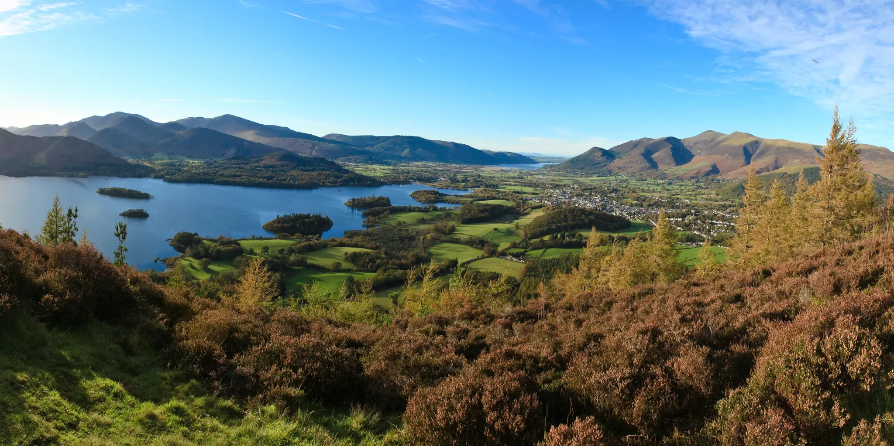
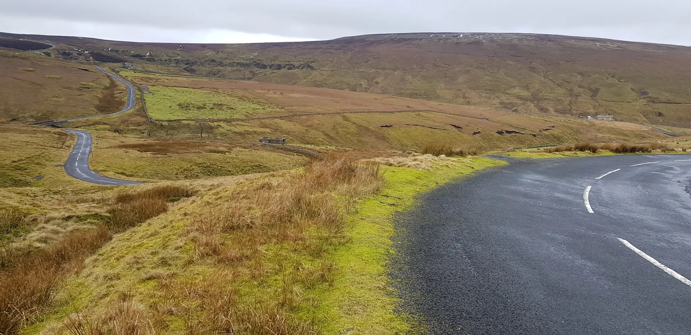
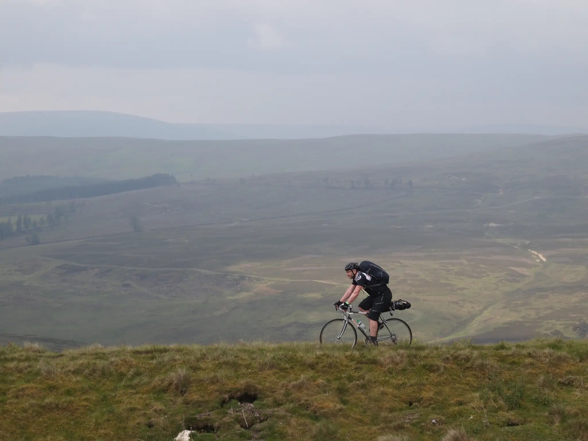

Whitehaven to Tynemouth:
3 Day Route

The iconic Sea to Sea (known as the C2C) Route will guide you 227 km from the edge of the Irish Sea to the North Sea. Starting in Whitehaven, you will pass through some of the UK’s most stunning scenery such as the Lake District National Park, the Eden Valley, and the Pennines, before arriving in Tyneside.
Day 1:
Whitehaven to Penrith
90km →, 1349m ↑
After dipping your wheel in the Irish Sea at the harbour ramp near The Beacon, set off from Whitehaven harbour following the National Cycle Network Signs (NCN), until you join the old railway line which takes you all the way to Rowrah. Skirt around Lamplugh Fell to the east side of Loweswater where you then turn left along the River Cocker before tackling your main hill of the day at Whinlatter. Stay on the main road all the way up the hill to the Whinlatter Forest café at the top, then follow the road down the other side to Braithwaite. From here it’s a short ride to the beautiful market town of Keswick, a top spot for lunch. The route has been resigned and diverted out of Keswick and now takes you up past Castlerigg Stone Circle. Follow the route from here onto the north side of the A66 to Mungrisdale and on to Greystoke. Cross over the top of the M6 motorway and follow the route into town and to your overnight destination of Penrith.
Accommodation options:
Day 2:
Penrith to Stanhope
70.6km →, 1635m ↑
From Penrith you will see the North Pennine hills in front of you to the east, that’s where you’re heading today! Follow the NCN out of Penrith, over the iron bridge at Langwathby. In the village the route heads off to your left towards Renwick and onwards to the long climb which takes you over Hartside. Stop at Hartside and check out the views . There are some stunning views looking west on a clear day. From here it’s pretty much downhill all the way down the road to Garrigill. More steep climbs out of Garrigill (20%) and then head over the top to Nenthead (25% downhill). There’s a nice coffee shop in Nenthead and also a bike repair shop. From Nenthead it’s a roller coaster of a ride with several climbs and descents through stunning countryside to Allenheads, Rookhope and finally Stanhope. Keep an eye out for the disused lead mines and old railway tracks.
Accommodation options:
Day 3:
Stanhope to Tynemouth
67.3km →, 857m ↑
Your day starts with a tough climb directly out of Stanhope, there’s two defibrillators placed at strategic points on the hill! Near the top of the hill keep an eye out for the right turnoff along the track to Parkhead station to join the old Waskerley Way railway line. After that it’s pretty much downhill all the way to Consett. Take the turn off to your left to Derwent Park and to the River Tyne at Swalwell. From there follow the river, keeping it on your left until you reach the Millenium Bridge in the centre of Newcastle, cross over this bridge and start following the signs for the NCN 72 or NCN 1 downstream staying on the north of the river to Tynemouth Castle. Continue along the promenade by the river and at the end ride up a short incline and you will see the castle in front of you. The finish is at the Tynemouth Sailing Club by the north pier.
Accommodation options:
Beachfront AirBnb: Tynemouth →
Basic Kit List
Packing light but not forgetting those dry pair of socks is the key to making sure you stay as comfy as possible.
Cycling Clothing
- Bib Shorts or Tights
- Short or Long Sleeve Jerseys
- Base Layers
- Arm and Leg Warmers
- Lightweight Waterproof Jacket
- Gloves
- Cleats
- Helmet
Repairs
- Puncture Repair Kit
- Allen Keys
- Spare Inner Tubes
- Mini Pump
General
- GPS Computer
- Phone
- Charging Bank(s) and Cables
- Card and Emergency Cash
- Snacks (personal favourite: Kellogg's Squares bars)
- Water
- Lightweight Lock
- Frame and/or Handlebar Bag
- Off-Bike Clothes
- Earphones